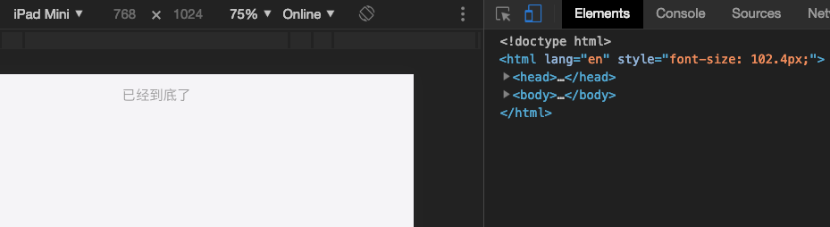
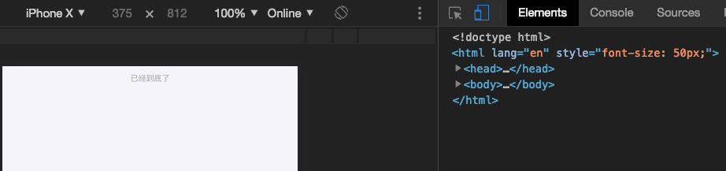
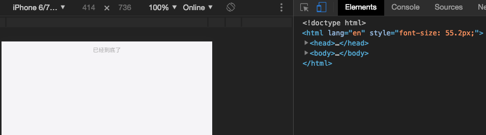

移动开发中视觉稿和设备之间单位自适应转化
设置根元素大小，通常设计稿的设计宽度为750，也有720或者别的尺寸的，那么在这个尺寸上的所有元素的大小都是基于这个宽度来显示的，我们正常在移动端使用设备，每个设备的宽度不尽相同，所以只要按照这个比例进行缩放就可以完成所有设备的显示一致性。
按照比例进行缩放，就需要使用rem，rem是根据当前页面根元素大小调整的单位，设备的屏幕改变只要改变这个根元素的大小，就可以改变页面所有元素的尺寸。
获取当前屏幕的宽度1
const cWidth = document.documentElement.clientWidth
1 | const scale = document.documentElement.clientWidth/750 |
当前屏幕宽度和设计稿750的比例，这个比例的用处在于知道设备页面里面的元素大小和设计稿里面尺寸之间的关系。如果这个比列是0.5，那么设计稿里面的所有元素的大小都需要除以2才是设备里面的元素真实大小。
1 | const realSize = (realWidth/designWidth)*designSize |
划重点：那么按照这个逻辑，(realWidth/designWidth)是固定计算的，只要在写页面时候尺寸完全按照designSize来，就可以计算出得到realSize，这可是正好符合我们的预期。我们知道根元素和rem的乘积就是真实元素大小，那么把(realWidth/designWidth)作为根元素大小，designSize作为我们写页面的大小，只不过designSize要转成rem写。
这么设置根元素1
root.style.fontSize = realWidth/designWidth + 'px'
如果设计稿的字体大小是50px,那么设置这个元素大小时候就应该这么写：1
font-size: 50rem;
这样的话，一个750设计稿上面的一个50px大小的字体遇上一个375设备就会变成这样：1
(375/750)*50 => 25px
那一个720设计稿上面的一个50px大小的字体遇上一个414设备就会变成这样：1
(414/720)*50 => 28.75px
这样也算解决设计稿和实际开发的尺寸对应问题了，
总觉得在写页面的时候写这么大的rem尺寸，而根元素通常只有小数位的px很别扭。
我们如果想写成设计稿的尺寸，而且单位就要用px。
划重点：那么我们需要用px和rem的转化工具postcss-plugin-px2rem
我们在用postcss时候带上这个插件就可以了。
1 | postcss: { |
1 | // input |
这样的话我们就可以根据rootValue的值(100)把根元素的设置倍数扩大。
设置根元素1
root.style.fontSize = (realWidth/designWidth)*rootValue + 'px'
如果设计稿的字体大小是50px,那么设置这个元素大小时候就应该这么写：1
font-size: 50px;
再来一遍这个栗子，一个750设计稿上面的一个50px大小的字体遇上一个375设备就会变成这样：1
(375/750)*100*0.5 => 25px
以上的font-size会被px2rem转化成0.5rem,(375/750)*100是根元素的大小也就是50px。
完整代码在这里：1
2
3
4
5
6
7
8
9
10// 设置根元素大小
export const setRootFontSize = ( designWidth = 750, stdRootValue = 100) => {
const root = document.documentElement
const scale = root.clientWidth / designWidth
const resetFontSize = scale * stdRootValue + 'px'
if (root.style.fontSize !== resetFontSize) {
root.style.fontSize = resetFontSize
}
}
// 接下来就是处理webpack中的postcss-plugin-px2rem配置问题了
原理很简单，开发时候讨便宜的实现方案。



一场视觉稿和设备单位匹配的自适应缩放的革命结束了，再也不用担心设备的大小引起的匹配问题，连视觉MM走查时候对你的好感度都倍增=。=
原创内容，欢迎交流转载请注明出处
- 本文链接：http://aszero.com/2019/03/15/移动开发中视觉稿和设备之间单位自适应转化/
- 版权声明：aszero